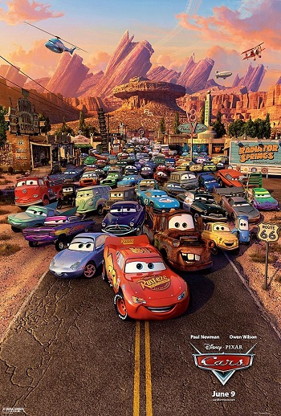

Тачки
Неукротимый в своем желании всегда и во всем побеждать гоночный автомобиль «Молния» Маккуин вдруг обнаруживает, что сбился с пути и застрял в маленьком захолустном городке Радиатор-Спрингс, что находится где-то на трассе 66 в Калифорнии.
ТрейлерХолодное сердце 2
Анна, Эльза, Кристоф, его верный олень Свен и никогда не унывающий снеговик Олаф должны будут покинуть уютное королевство Эренделл и отправиться ещё дальше на север, в путешествие, которое приведет их к истокам древних легенд и поможет раскрыть тайны, касающиеся прошлого их родной страны.
ТрейлерЭверест
Путешествие на самую высокую точку мира? Что может быть круче! Так решает Лу, когда случайно находит огромное, но очень милое чудовище посреди шумного мегаполиса. Пусть их преследуют ученые из сверхсекретной лаборатории, зато её новый друг умеет смешить и творить чудеса. Лу уверена, что поможет дружелюбному йети вернуться домой — на Эверест.
ТрейлерГоловоломока
Райли — обычная 11-летняя школьница, и, как у каждого из нас, ее поведение определяют пять базовых эмоций: Радость, Печаль, Страх, Гнев и Брезгливость. Эмоции живут в сознании девочки и каждый день помогают ей справляться с проблемами, руководя всеми ее поступками. До поры до времени эмоции живут др…
ТрейлерКороль лев
Киноверсия анимационной классики «Диснея» об обитателях африканской саванны, которым не хуже людей знакома любовь и дружба, вероломство и борьба за власть. У царственного льва Муфасы рождается наследник Симба, которому уготован извилистый путь от избалованного непоседы до несчастного изгоя, от беспечного бродяги до спасителя и повелителя всех зверей.
ТрейлерЛео и Тиг
«Лео и Тиг» — российский анимационный детский мультсериал, созданный студией «Паровоз». В России мультсериал транслируется на телеканалах «Карусель», «Мульт», «Ani» и «Супер».
СмотретьМоана
Бесстрашная Моана, дочь вождя маленького племени на острове в Тихом океане, больше всего на свете мечтает о приключениях и решает отправиться в опасное морское путешествие. Вместе с некогда могущественным полубогом Мауи им предстоит пересечь океан, сразиться со страшными чудовищами и разрушить древнее заклятие.
ТрейлерРальф

Четверо подростков оказываются внутри игры «Джуманджи». Их ждет схватка с носорогами, черными мамбами, а на каждом шагу будет подстерегать бесконечная череда ловушек и головоломок. Чтобы пройти игру и остаться в живых, им придется перевоплотиться в персонажей игры: робкий и застенчивый Спенсер превр…
ТрейлерРататуй
Крыс Реми обладает уникальным вкусом. Он готов рисковать собственной жизнью, чтобы посмотреть любимое кулинарное шоу и раздобыть какую-нибудь приправку или просто свежий продукт. Реми живет со своими сородичами, которые его не понимают и не принимают его увлечения кулинарией. Когда Реми случайно поп…
ТрейлерШрек 2

Шрэк и Фиона возвращаются после медового месяца и находят письмо от родителей Фионы с приглашением на ужин. Однако те не подозревают, что их дочь тоже стала огром! Вместе с Осликом счастливая пара отправляется в путешествие, полное неожиданностей, и попадает в круговорот событий, во время которых приобретает множество друзей…
ТрейлерВ поисках Немо

Среди прекрасных тропических морских стихий, в районе Большого барьерного рифа в уединении живет рыба-клоун по имени Марлин. Он растит своего единственного сыночка Немо. Океан и существующие в нем опасности очень страшат Марлина, и он как может ограждает сына от них, но молодой Немо, страдающий изли…
ТрейлерЗверополис

Добро пожаловать в Зверополис — современный город, населенный самыми разными животными, от огромных слонов до крошечных мышек. Зверополис разделен на районы, полностью повторяющие естественную среду обитания разных жителей — здесь есть и элитный район Площадь Сахары и неприветливый Тундратаун. В это…
Трейлер